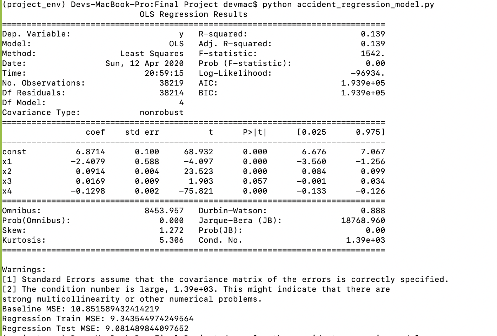
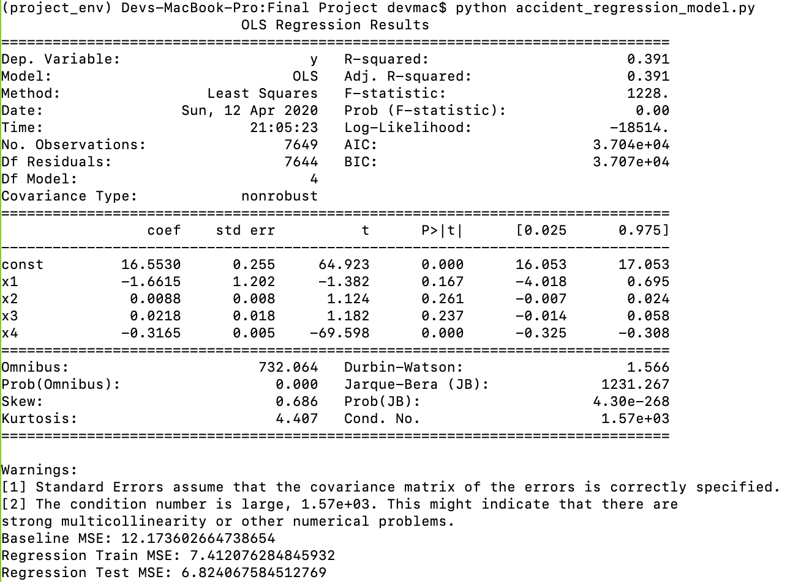
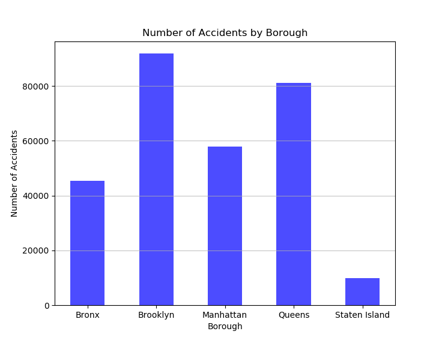
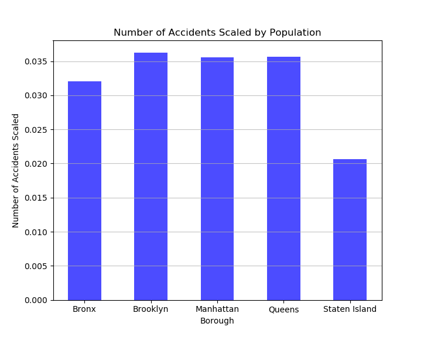
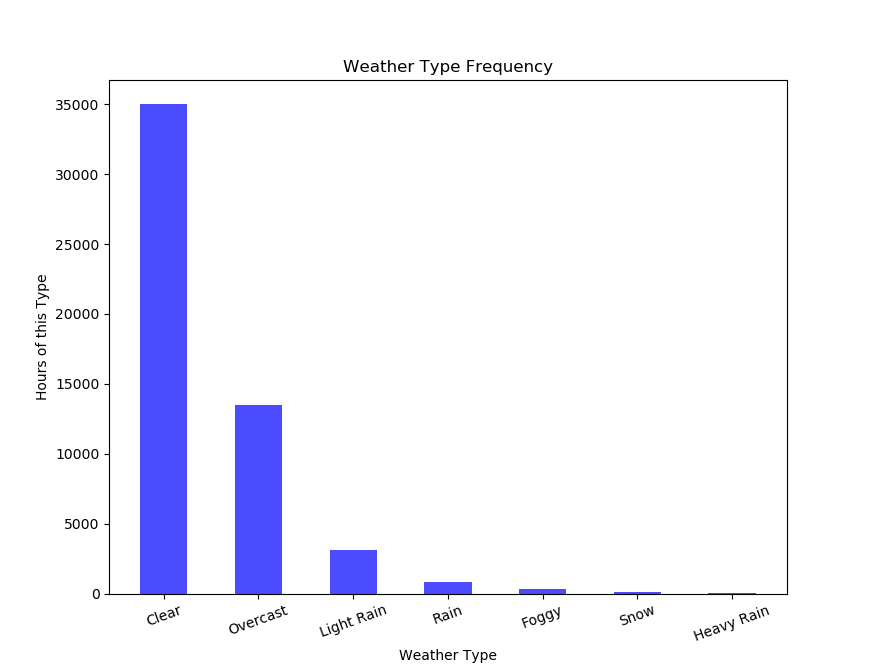
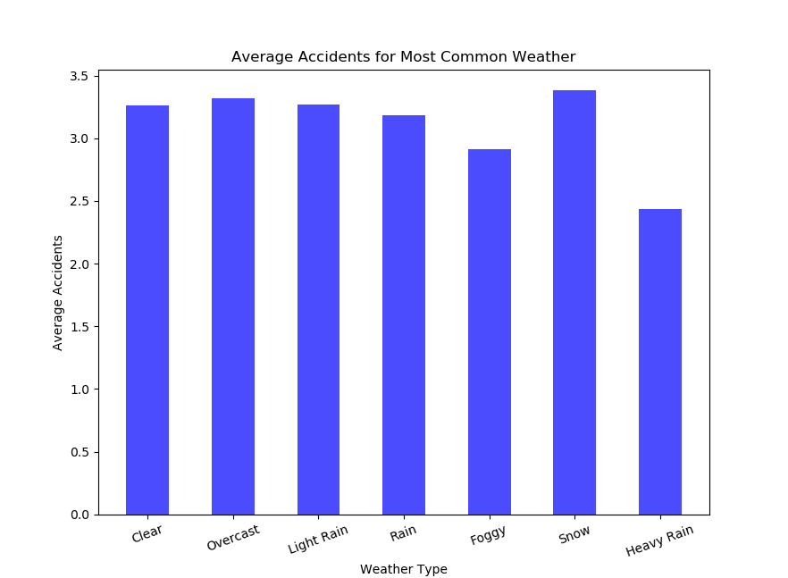
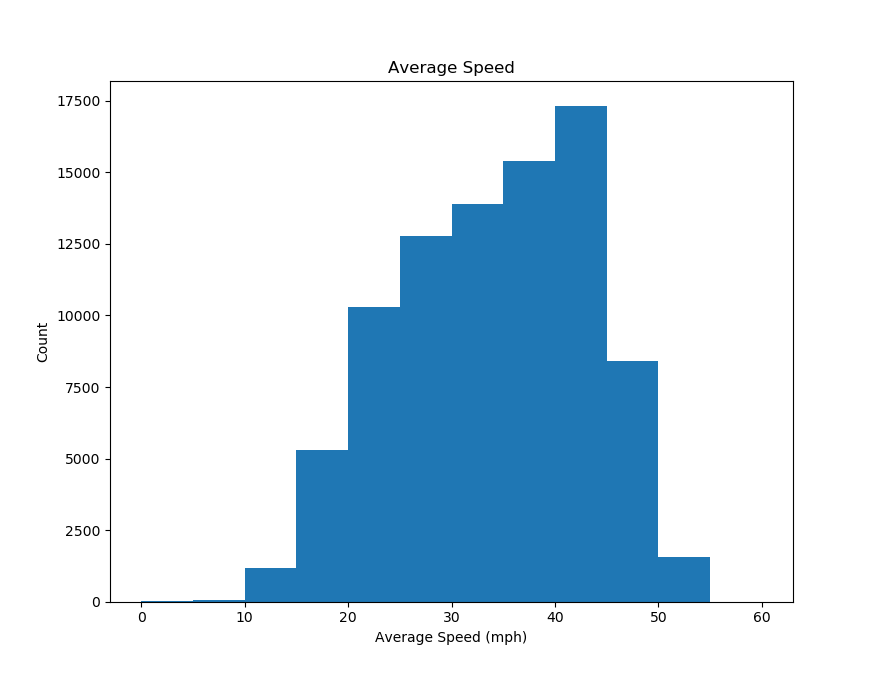
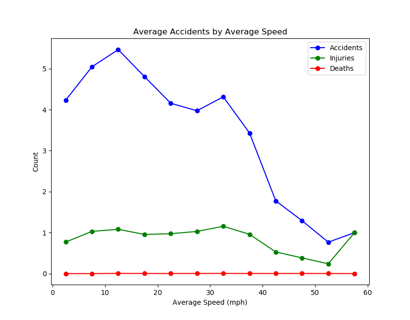

Our objective is to predict the number of traffic accidents in an hours (potentially also number of traffic injuries and deaths) in each of the five boroughs of New York given time of day, weather conditions in the borough, and average speed of traffic in the borough at the given time (based on model performance, we may construct other features using the speed data as well)
For the multiple linear regression model, our metric for success will be determined by comparing the model’s mean square error with the mean square error of a benchmark model (predicts numbers of accidents in an hour by computing the average number of accidents per hour across New York). If the mean squared error of our model is less than 50% of that of the benchmark model, we will consider the model to be successful.
These graphs are all included in Figures 2A-2F
We started by making a few simple bar charts to explore and evaluate our data. We looked at the total number of accidents per borough, and then we looked at this per capita, which shows that Staten Island has significantly fewer accidents per capita than the other boroughs.
We then did an analysis for 7 different types of weather to judge our weather data and see how much adding weather categories might improve the next model we implement. While more mild weather types lead to a similar average number of accidents in an hour in a borough, more extreme weather yields the maximum (snow) and minimum (heavy rain) accidents. However, these are rarer weather types, so it remains to be seen how much factoring in weather type will improve our predictions.
To explore our data surrounding average speed, we aggregated in 5mph intervals and first produced a histogram that showed that average speed is usually 30-50 mph. We then used line graphs to see how speed changes accidents, injuries, and deaths, which yielded some important insights. First, slower average speeds significantly increase crash frequency, but these crashes are much less severe. This explains why average speed was a good predictor, and it also implies that injuries will be harder to predict. Lastly, it shows that there are significantly fewer reported deaths than injuries. Further analysis and shows that our data includes fewer than 300 deaths in the given time period, which is consistent with research we did on NYC car crash fatalities.
Our visualizations are mostly self-explanatory, except that we must keep in mind that the data is divided both by boroughs and hours.
To see how we went about training our model see:
Our model script: https://drive.google.com/a/brown.edu/file/d/1bBsLUft2FAGjiVWxN1kRbKErNifrBXsJ/view?usp=sharing
Our visualization script: https://drive.google.com/a/brown.edu/file/d/1f4TG9ff2VxJkW3WIV0yVOMEipVeZTPnF/view?usp=sharing
Our database: https://drive.google.com/a/brown.edu/file/d/1iSJbha6YJXRv-5czAFyfw8aMU1jf5daI/view?usp=sharing
Figure 1A: Aggregate Borough Regression Model

Figure 1B: Queens Regression Model

Figure 2A: Number of Accidents by Borough

Figure 2B: Number of Accidents by Borough per Capita

Figure 2C: Frequency of a Selection of Weather Types

Figure 2D: Average Accidents per Hour in a Borough by Weather Type

Figure 2E: Average Speed for a Given Borough and Hour

Figure 2F: Average Accidents, Injuries, And Deaths by Average Speed in the Borough and Hour

We want to predict the number of accidents in New York City at different hours of the day based on a number of different factors (such as wind speed, precipitation, average traffic speed, etc.). We chose to go with a multilinear regression model because we wanted to execute a continuous regression task (to predict the number of accidents in NYC) using a number of different features. In addition, multilinear regression gives flexibility with regards to trying out different combinations of features and seeing how MSEs changed - this can allow us to observe relationships in the data that would have otherwise been missed. We are also considering switching to Lasso or Ridge regression as we suspect that adding regularization may improve our model.
This model is limited because it only includes our quantitative data. In the future, we will use a more sophisticated model that will factor in things like borough, weather type, and day of the week.
As we will be using Mean Squared Error to measure how well our model can predict the number of accidents in New York City at different hours of the day, we will primarily use bar graphs to display the MSEs of our models using different features and across boroughs. At the moment, we think that the graphs that we will add to our poster include:
A bar graph showing how MSE values change depending on how many and which features we use to train our model.
A bar graph showing how MSE values change depending on which borough of New York City we look at, and how these differences change as we use different features to train our model.
We may consider adding a bar graph to predict the number of people injured but there may not be enough variation in the number of injuries for us to train our model.